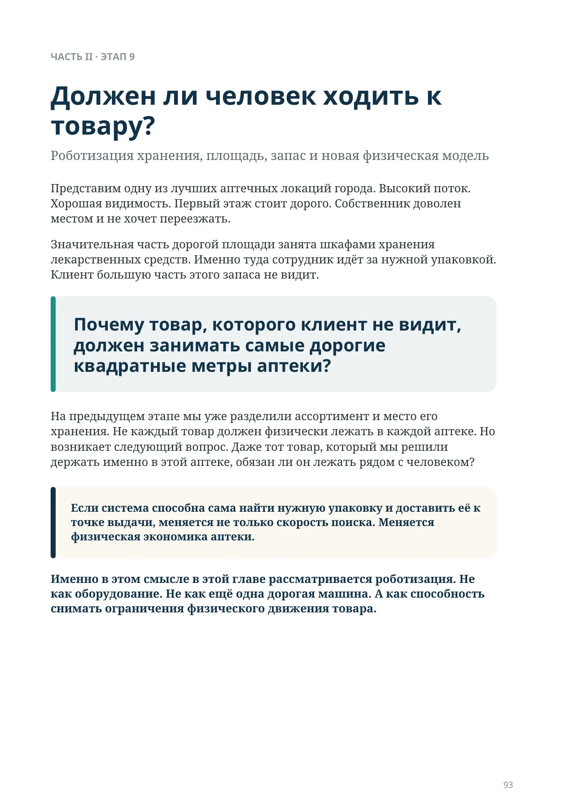
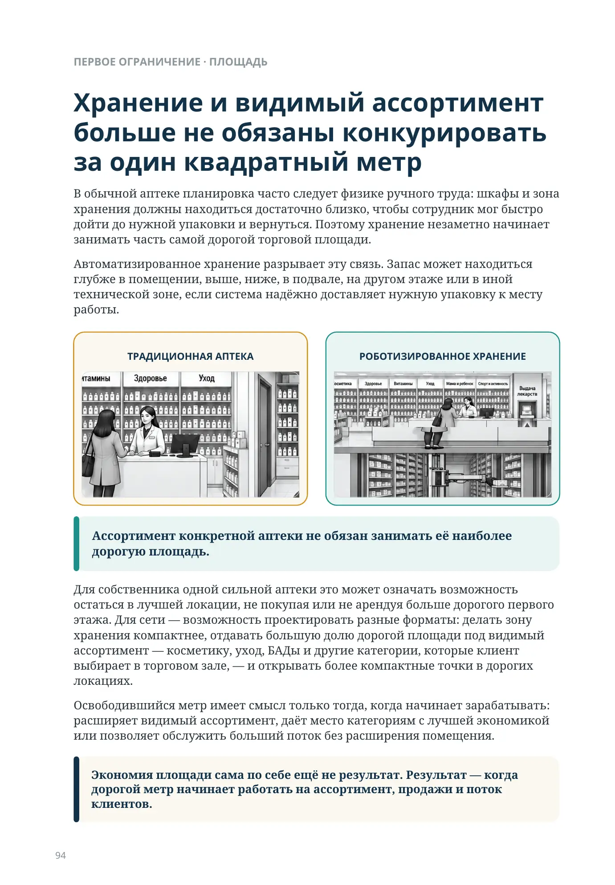
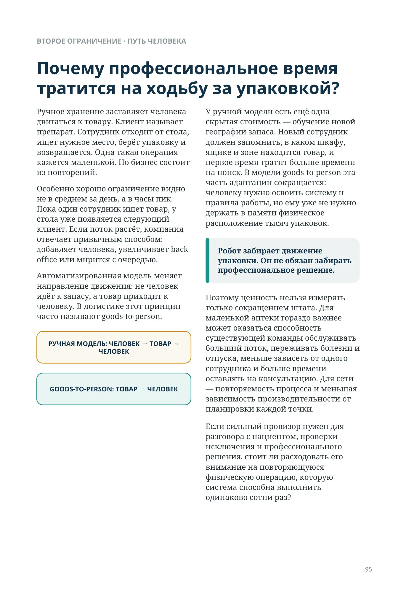
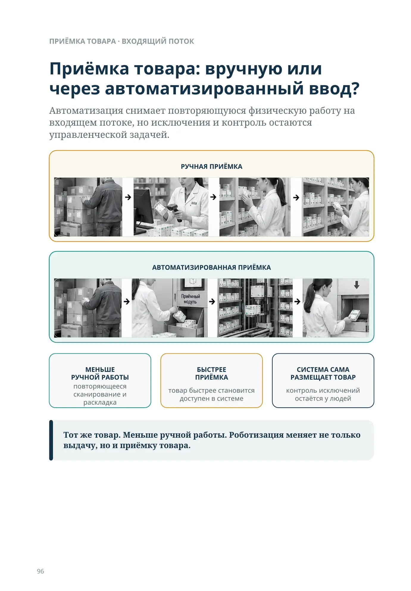
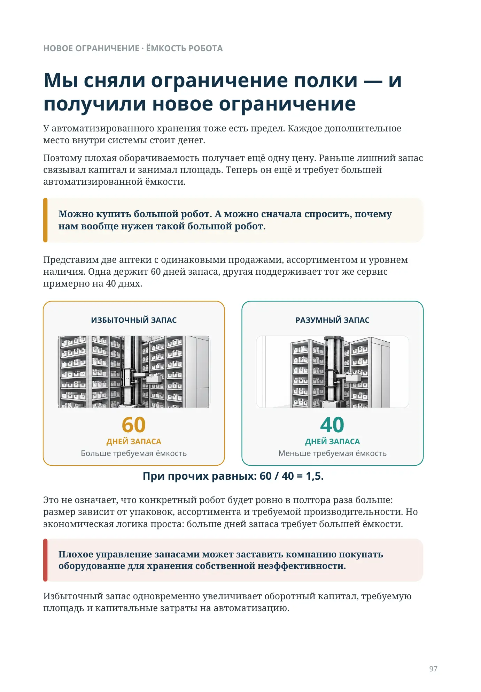
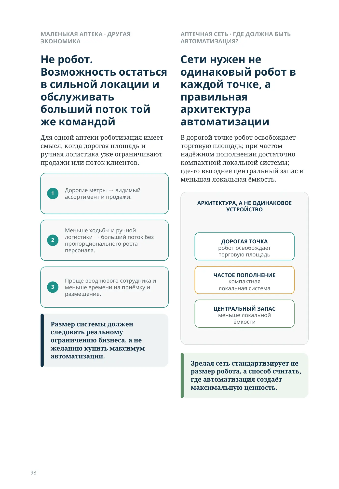
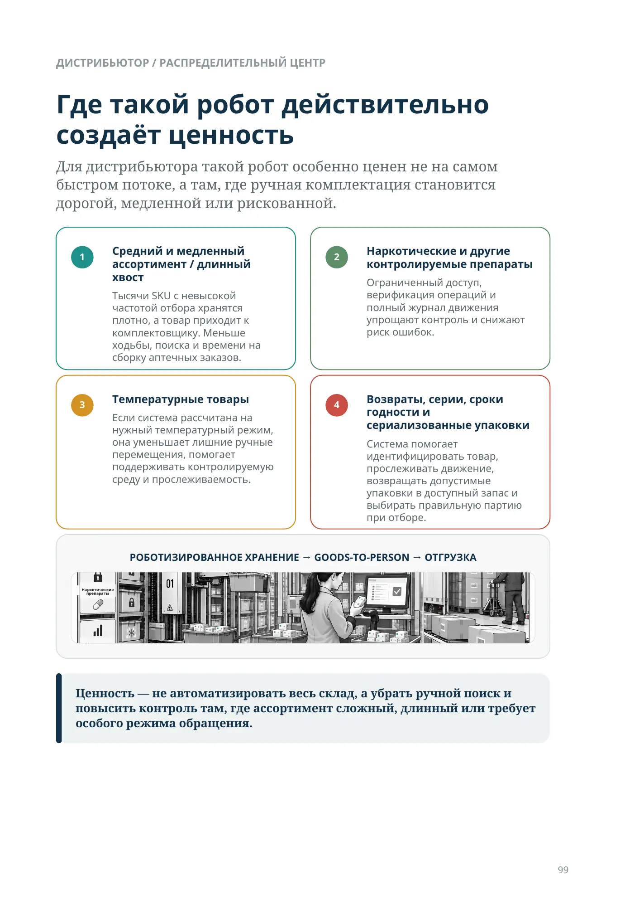
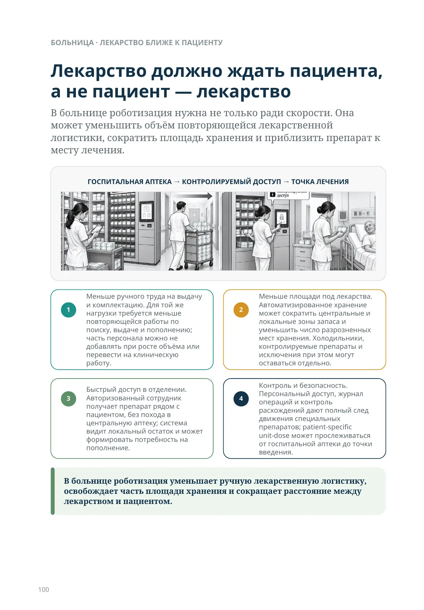
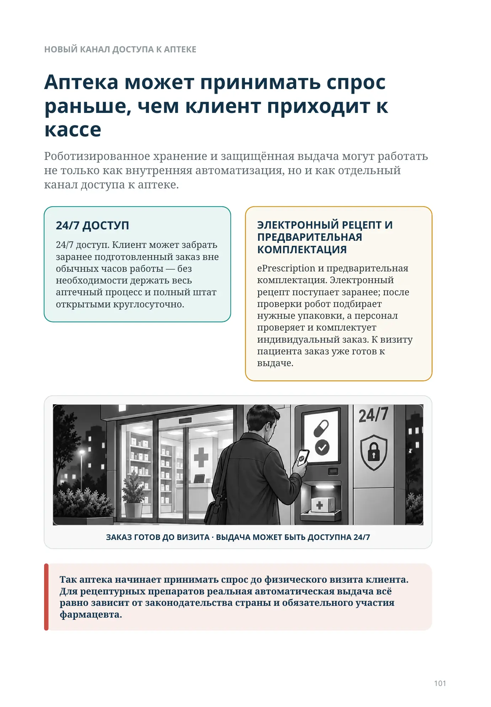
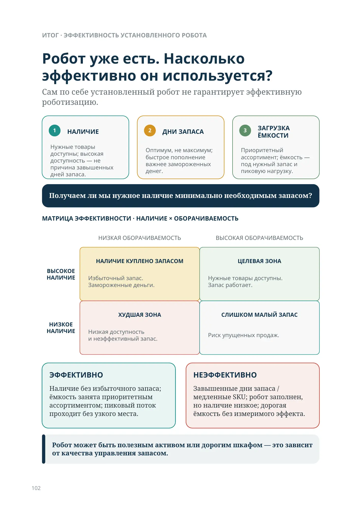
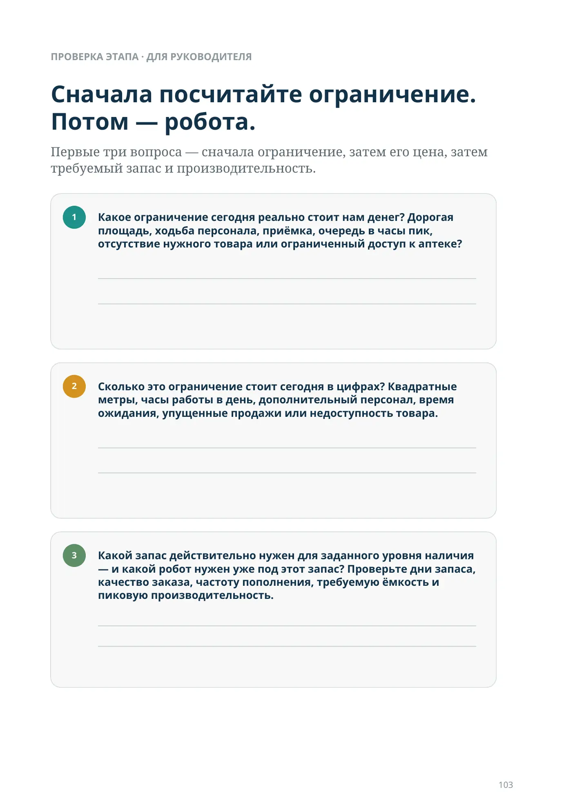
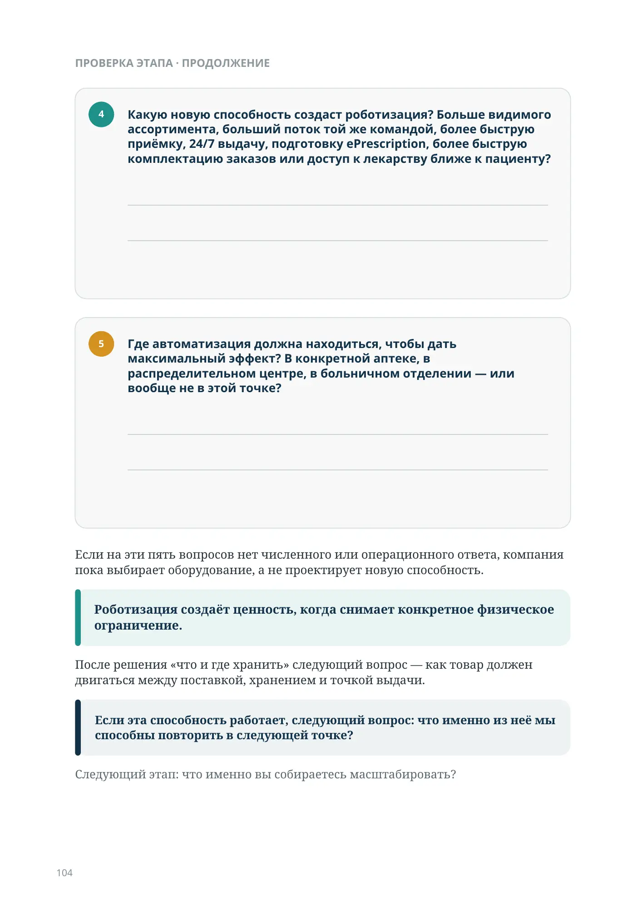
Должен ли человек ходить к товару?
ЧАСТЬ II · ЭТАП 9
Роботизация хранения, площадь, запас и новая физическая модель
Представим одну из лучших аптечных локаций города. Высокий поток. Хорошая видимость. Первый этаж стоит дорого. Собственник доволен местом и не хочет переезжать.
Значительная часть дорогой площади занята шкафами хранения лекарственных средств. Именно туда сотрудник идёт за нужной упаковкой. Клиент большую часть этого запаса не видит.
Почему товар, которого клиент не видит, должен занимать самые дорогие квадратные метры аптеки?
На предыдущем этапе мы уже разделили ассортимент и место его хранения. Не каждый товар должен физически лежать в каждой аптеке. Но возникает следующий вопрос. Даже тот товар, который мы решили держать именно в этой аптеке, обязан ли он лежать рядом с человеком?
Если система способна сама найти нужную упаковку и доставить её к точке выдачи, меняется не только скорость поиска. Меняется физическая экономика аптеки.
Именно в этом смысле в этой главе рассматривается роботизация. Не как оборудование. Не как ещё одна дорогая машина. А как способность снимать ограничения физического движения товара.
Хранение и видимый ассортимент больше не обязаны конкурировать за один квадратный метр
В обычной аптеке планировка часто следует физике ручного труда: шкафы и зона хранения должны находиться достаточно близко, чтобы сотрудник мог быстро дойти до нужной упаковки и вернуться. Поэтому хранение незаметно начинает занимать часть самой дорогой торговой площади.
Автоматизированное хранение разрывает эту связь. Запас может находиться глубже в помещении, выше, ниже, в подвале, на другом этаже или в иной технической зоне, если система надёжно доставляет нужную упаковку к месту работы.
Ассортимент конкретной аптеки не обязан занимать её наиболее дорогую площадь.
Для собственника одной сильной аптеки это может означать возможность остаться в лучшей локации, не покупая или не арендуя больше дорогого первого этажа. Для сети — возможность проектировать разные форматы: делать зону хранения компактнее, отдавать большую долю дорогой площади под видимый ассортимент — косметику, уход, БАДы и другие категории, которые клиент выбирает в торговом зале, — и открывать более компактные точки в дорогих локациях.
Освободившийся метр имеет смысл только тогда, когда начинает зарабатывать: расширяет видимый ассортимент, даёт место категориям с лучшей экономикой или позволяет обслужить больший поток без расширения помещения.
Экономия площади сама по себе ещё не результат. Результат — когда дорогой метр начинает работать на ассортимент, продажи и поток клиентов.
Почему профессиональное время тратится на ходьбу за упаковкой?
Ручное хранение заставляет человека двигаться к товару. Клиент называет препарат. Сотрудник отходит от стола, ищет нужное место, берёт упаковку и возвращается. Одна такая операция кажется маленькой. Но бизнес состоит из повторений.
Особенно хорошо ограничение видно не в среднем за день, а в часы пик. Пока один сотрудник ищет товар, у стола уже появляется следующий клиент. Если поток растёт, компания отвечает привычным способом: добавляет человека, увеличивает back office или мирится с очередью.
Автоматизированная модель меняет направление движения: не человек идёт к запасу, а товар приходит к человеку. В логистике этот принцип часто называют goods-to-person.
У ручной модели есть ещё одна скрытая стоимость — обучение новой географии запаса. Новый сотрудник должен запомнить, в каком шкафу, ящике и зоне находится товар, и первое время тратит больше времени на поиск. В модели goods-to-person эта часть адаптации сокращается: человеку нужно освоить систему и правила работы, но ему уже не нужно держать в памяти физическое расположение тысяч упаковок.
Робот забирает движение упаковки. Он не обязан забирать профессиональное решение.
Поэтому ценность нельзя измерять только сокращением штата. Для маленькой аптеки гораздо важнее может оказаться способность существующей команды обслуживать больший поток, переживать болезни и отпуска, меньше зависеть от одного сотрудника и больше времени оставлять на консультацию. Для сети — повторяемость процесса и меньшая зависимость производительности от планировки каждой точки.
Если сильный провизор нужен для разговора с пациентом, проверки исключения и профессионального решения, стоит ли расходовать его внимание на повторяющуюся физическую операцию, которую система способна выполнить одинаково сотни раз?
Приёмка товара: вручную или через автоматизированный ввод?
Автоматизация снимает повторяющуюся физическую работу на входящем потоке, но исключения и контроль остаются управленческой задачей.
РУЧНАЯ ПРИЁМКА
АВТОМАТИЗИРОВАННАЯ ПРИЁМКА
повторяющееся сканирование и раскладка
товар быстрее становится доступен в системе
Контроль исключений остаётся у людей.
Тот же товар. Меньше ручной работы. Роботизация меняет не только выдачу, но и приёмку товара.
Мы сняли ограничение полки — и получили новое ограничение
У автоматизированного хранения тоже есть предел. Каждое дополнительное место внутри системы стоит денег.
Поэтому плохая оборачиваемость получает ещё одну цену. Раньше лишний запас связывал капитал и занимал площадь. Теперь он ещё и требует большей автоматизированной ёмкости.
Можно купить большой робот. А можно сначала спросить, почему нам вообще нужен такой большой робот.
Представим две аптеки с одинаковыми продажами, ассортиментом и уровнем наличия. Одна держит 60 дней запаса, другая поддерживает тот же сервис примерно на 40 днях.
При прочих равных: 60 / 40 = 1,5.
Это не означает, что конкретный робот будет ровно в полтора раза больше: размер зависит от упаковок, ассортимента и требуемой производительности. Но экономическая логика проста: больше дней запаса требует большей ёмкости.
Плохое управление запасами может заставить компанию покупать оборудование для хранения собственной неэффективности.
Избыточный запас одновременно увеличивает оборотный капитал, требуемую площадь и капитальные затраты на автоматизацию.
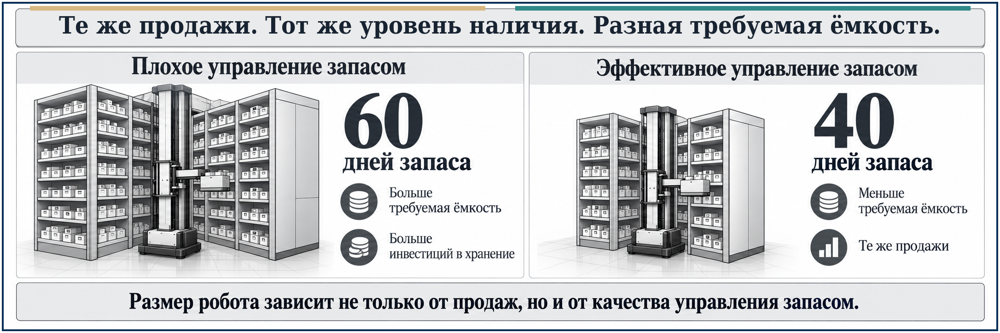
Не робот. Возможность остаться в сильной локации и обслуживать больший поток той же командой
Для одной аптеки роботизация имеет смысл, когда дорогая площадь и ручная логистика уже ограничивают продажи или поток клиентов.
- Дорогие метры → видимый ассортимент и продажи.
- Меньше ходьбы и ручной логистики → больший поток без пропорционального роста персонала.
- Проще ввод нового сотрудника и меньше времени на приёмку и размещение.
Размер системы должен следовать реальному ограничению бизнеса, а не желанию купить максимум автоматизации.
Сети нужен не одинаковый робот в каждой точке, а правильная архитектура автоматизации
В дорогой точке робот освобождает торговую площадь; при частом надёжном пополнении достаточно компактной локальной системы; где-то выгоднее центральный запас и меньшая локальная ёмкость.
Зрелая сеть стандартизирует не размер робота, а способ считать, где автоматизация создаёт максимальную ценность.
Где такой робот действительно создаёт ценность
Для дистрибьютора такой робот особенно ценен не на самом быстром потоке, а там, где ручная комплектация становится дорогой, медленной или рискованной.
- Средний и медленный ассортимент / длинный хвост. Тысячи SKU с невысокой частотой отбора хранятся плотно, а товар приходит к комплектовщику. Меньше ходьбы, поиска и времени на сборку аптечных заказов.
- Температурные товары. Если система рассчитана на нужный температурный режим, она уменьшает лишние ручные перемещения, помогает поддерживать контролируемую среду и прослеживаемость.
- Наркотические и другие контролируемые препараты. Ограниченный доступ, верификация операций и полный журнал движения упрощают контроль и снижают риск ошибок.
- Возвраты, серии, сроки годности и сериализованные упаковки. Система помогает идентифицировать товар, прослеживать движение, возвращать допустимые упаковки в доступный запас и выбирать правильную партию при отборе.
Ценность — не автоматизировать весь склад, а убрать ручной поиск и повысить контроль там, где ассортимент сложный, длинный или требует особого режима обращения.
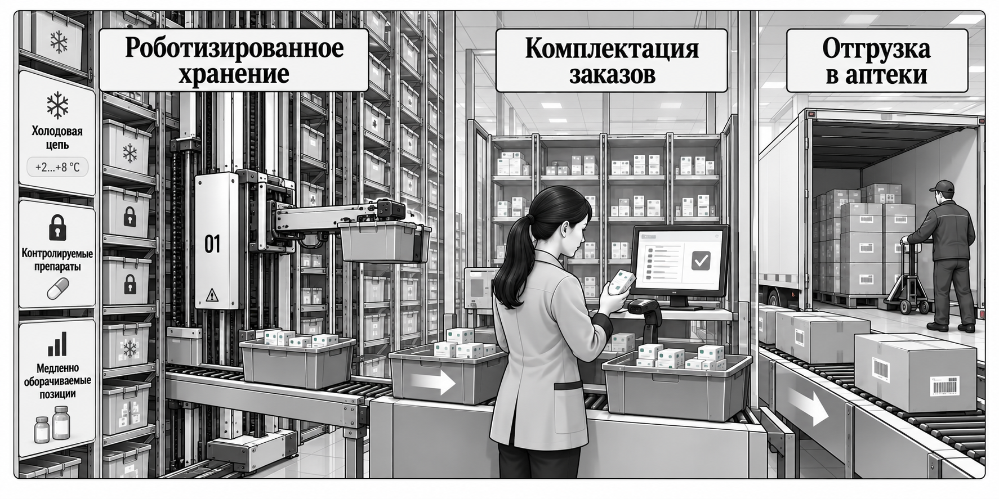
Лекарство должно ждать пациента, а не пациент — лекарство
В больнице роботизация нужна не только ради скорости. Она может уменьшить объём повторяющейся лекарственной логистики, сократить площадь хранения и приблизить препарат к месту лечения.
- Меньше ручного труда на выдачу и комплектацию. Для той же нагрузки требуется меньше повторяющейся работы по поиску, выдаче и пополнению; часть персонала можно не добавлять при росте объёма или перевести на клиническую работу.
- Меньше площади под лекарства. Автоматизированное хранение может сократить центральные и локальные зоны запаса и уменьшить число разрозненных мест хранения. Холодильники, контролируемые препараты и исключения при этом могут оставаться отдельно.
- Быстрый доступ в отделении. Авторизованный сотрудник получает препарат рядом с пациентом, без похода в центральную аптеку; система видит локальный остаток и может формировать потребность на пополнение.
- Контроль и безопасность. Персональный доступ, журнал операций и контроль расхождений дают полный след движения специальных препаратов; patient-specific unit-dose может прослеживаться от госпитальной аптеки до точки введения.
В больнице роботизация уменьшает ручную лекарственную логистику, освобождает часть площади хранения и сокращает расстояние между лекарством и пациентом.
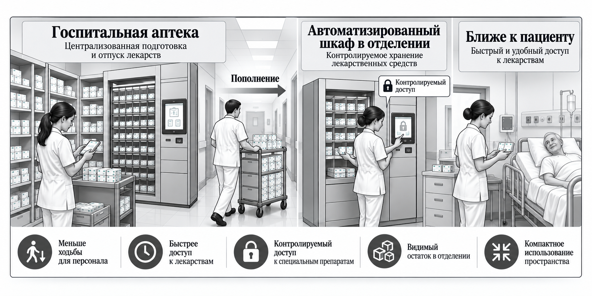
Аптека может принимать спрос раньше, чем клиент приходит к кассе
Роботизированное хранение и защищённая выдача могут работать не только как внутренняя автоматизация, но и как отдельный канал доступа к аптеке.
- 24/7 доступ. Клиент может забрать заранее подготовленный заказ вне обычных часов работы — без необходимости держать весь аптечный процесс и полный штат открытыми круглосуточно.
- ePrescription и предварительная комплектация. Электронный рецепт поступает заранее; после проверки робот подбирает нужные упаковки, а персонал проверяет и комплектует индивидуальный заказ. К визиту пациента заказ уже готов к выдаче.
Так аптека начинает принимать спрос до физического визита клиента. Для рецептурных препаратов реальная автоматическая выдача всё равно зависит от законодательства страны и обязательного участия фармацевта.
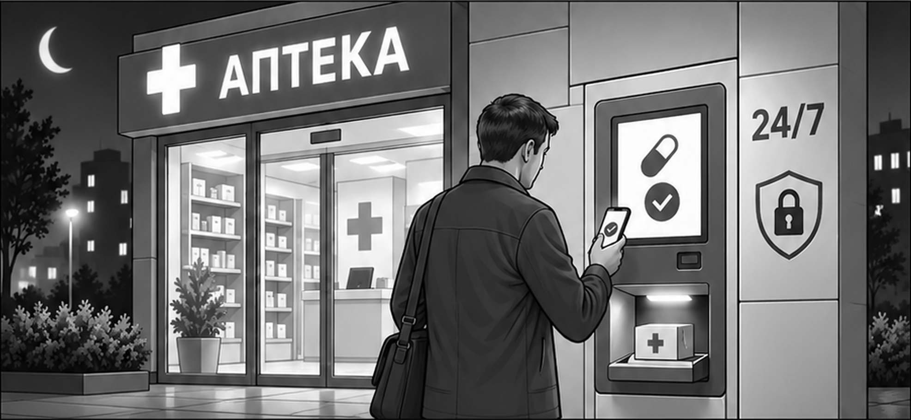
Робот уже есть. Насколько эффективно он используется?
Сам по себе установленный робот не гарантирует эффективную роботизацию.
НАЛИЧИЕ
Нужные товары доступны; высокая доступность — не причина завышенных дней запаса.
ДНИ ЗАПАСА
Оптимум, не максимум; быстрое пополнение важнее замороженных денег.
ЗАГРУЗКА ЁМКОСТИ
Приоритетный ассортимент; ёмкость — под нужный запас и пиковую нагрузку.
Получаем ли мы нужное наличие минимально необходимым запасом?
МАТРИЦА ЭФФЕКТИВНОСТИ · НАЛИЧИЕ × ОБОРАЧИВАЕМОСТЬ
НАЛИЧИЕ КУПЛЕНО ЗАПАСОМ
Избыточный запас. Замороженные деньги.
ЦЕЛЕВАЯ ЗОНА
Нужные товары доступны. Запас работает.
ХУДШАЯ ЗОНА
Низкая доступность и неэффективный запас.
СЛИШКОМ МАЛЫЙ ЗАПАС
Риск упущенных продаж.
ЭФФЕКТИВНО
Наличие без избыточного запаса; ёмкость занята приоритетным ассортиментом; пиковый поток проходит без узкого места.
НЕЭФФЕКТИВНО
Завышенные дни запаса / медленные SKU; робот заполнен, но наличие низкое; дорогая ёмкость без измеримого эффекта.
Робот может быть полезным активом или дорогим шкафом — это зависит от качества управления запасом.
Сначала посчитайте ограничение. Потом — робота.
Первые три вопроса — сначала ограничение, затем его цена, затем требуемый запас и производительность.
- Какое ограничение сегодня реально стоит нам денег? Дорогая площадь, ходьба персонала, приёмка, очередь в часы пик, отсутствие нужного товара или ограниченный доступ к аптеке?
- Сколько это ограничение стоит сегодня в цифрах? Квадратные метры, часы работы в день, дополнительный персонал, время ожидания, упущенные продажи или недоступность товара.
- Какой запас действительно нужен для заданного уровня наличия — и какой робот нужен уже под этот запас? Проверьте дни запаса, качество заказа, частоту пополнения, требуемую ёмкость и пиковую производительность.
- Какую новую способность создаст роботизация? Больше видимого ассортимента, больший поток той же командой, более быструю приёмку, 24/7 выдачу, подготовку ePrescription, более быструю комплектацию заказов или доступ к лекарству ближе к пациенту?
- Где автоматизация должна находиться, чтобы дать максимальный эффект? В конкретной аптеке, в распределительном центре, в больничном отделении — или вообще не в этой точке?
Если на эти пять вопросов нет численного или операционного ответа, компания пока выбирает оборудование, а не проектирует новую способность.
Роботизация создаёт ценность, когда снимает конкретное физическое ограничение.
После решения «что и где хранить» следующий вопрос — как товар должен двигаться между поставкой, хранением и точкой выдачи.